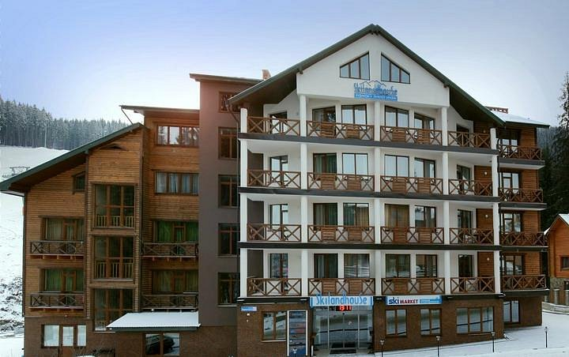
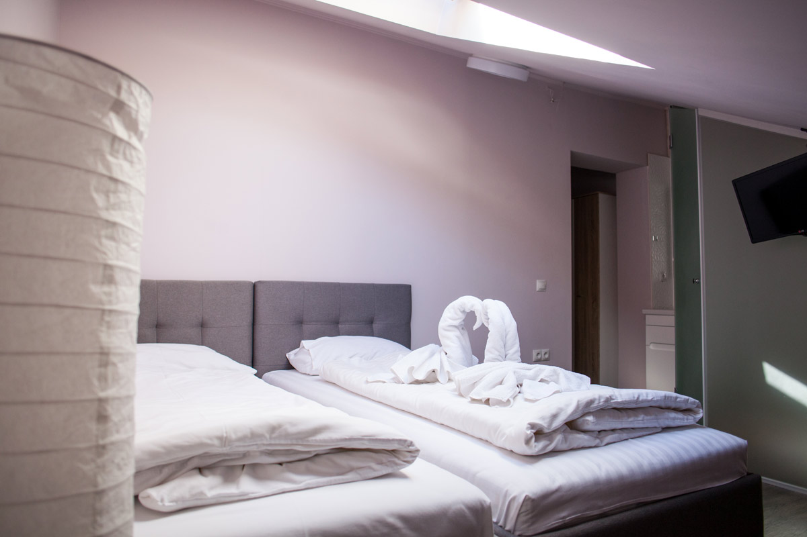
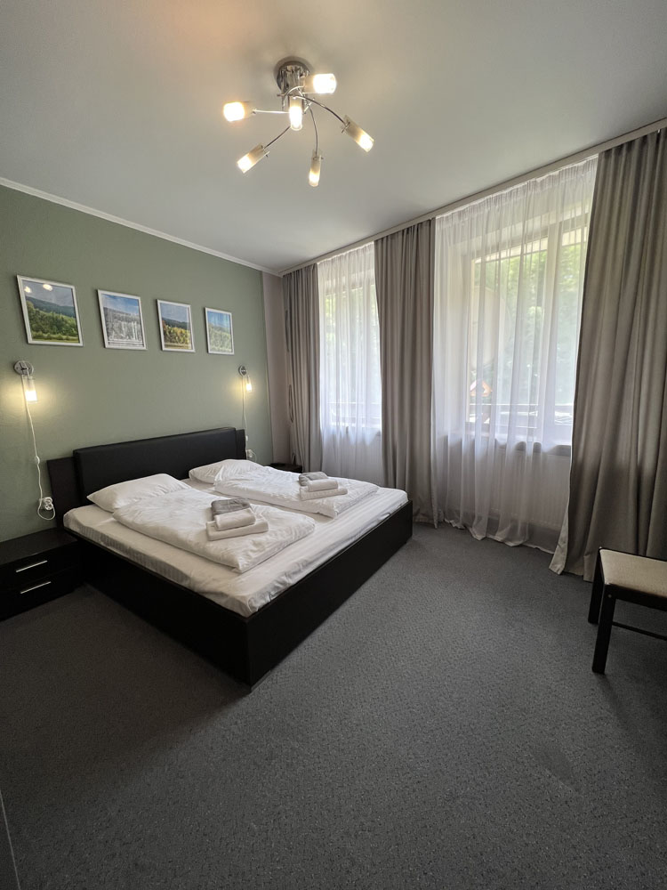
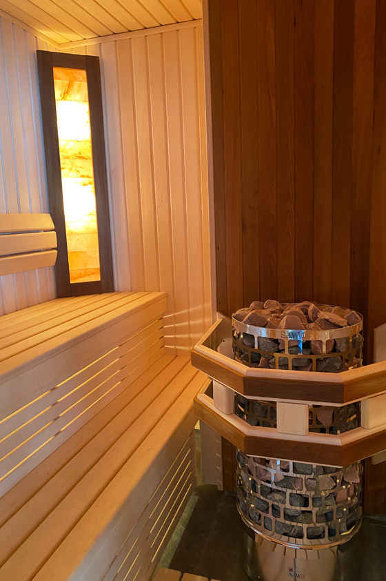

Small room
Компактний номер · офіційна категорія з прайс-листа

ЛОКАЦІЯ 01 · ПОЛЯНИЦЯ
Поруч із витягом 1R. Номери й апартаменти, SPA та сервіси для лижного відпочинку.
Переглянути номери ↓ВІД СХИЛУ ДО SPA
У публічному описі готелю зазначені SPA-зона з відкритим басейном і джакузі, хамам, фінська та інфрачервона сауни. Для зручності на схилах також опубліковані прокат і сервіс спорядження та сховище.
Описані послуги взято з публічних матеріалів готелю; поточний режим роботи та умови потрібно уточнювати напряму.
ПРОЖИВАННЯ · БУКОВЕЛЬ
Публічна категорія та опублікована площа, якщо вона є в описі. Актуальну комплектацію уточнюйте.
Компактний номер · офіційна категорія з прайс-листа
18–19 м² · за опублікованим описом
25 м² · за опублікованим описом
39 або 45 м² · категорії прайс-листа
Опубліковані тарифи на сезон 01.12.2026–30.04.2027, не live-ціна та не підтвердження наявності. Значення «від» відповідає нижчому з опублікованих сезонних тарифів для категорії. Остаточний тариф залежить від дати та умов, його слід уточнити в готелю. Площа апартаменту з видом на гори у джерелах розходиться (52/53 м²), тому тут не вказана.
ФОТО ЛОКАЦІЇ · БУКОВЕЛЬ
Фото з офіційних сторінок SkiLandHouse. Права на повторне використання не підтверджені; матеріали показані лише в локальному демо.



ПІСЛЯ СХИЛУ
Відкритий басейн, джакузі, хамам, фінська та інфрачервона сауни зазначені в описі готелю.
Ресторан-пивоварня та лаунж-бар, згадані в публічних матеріалах локації.
Відстань до витягу 1R близько 50 м за описом готелю. Прокат і сервіс лиж та сноубордів також зазначені.
ЗНАЙТИ ЛОКАЦІЮ
Курорт Буковель · 960 м над рівнем моря за сторінкою офіційних контактів.
Близько 50 м до витягу 1R за описом готелю; відстань не замірялась незалежно.